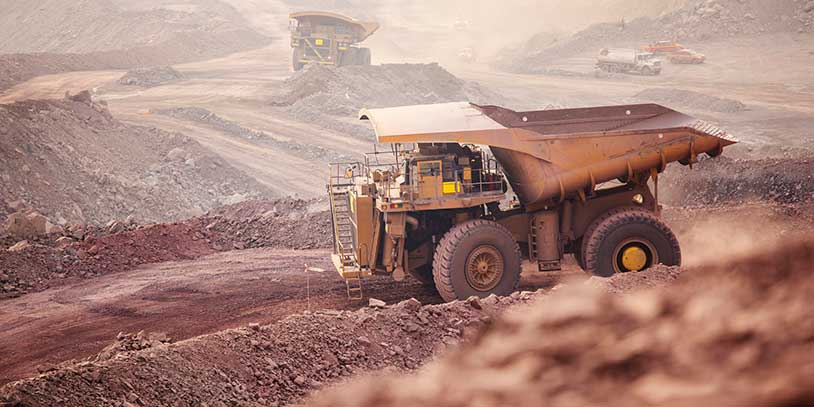

El sector económico de Antioquia es uno de los más dinámicos y diversificados de Colombia, contribuyendo significativamente al PIB del país. Aquí te presento los principales sectores que impulsan su economía:
📈 Principales sectores económicos de Antioquia:
🏗️ 1. Industria y manufactura

Antioquia es un centro industrial clave en Colombia, con grandes empresas en:
- Textiles y confecciones (Coltejer, Fabricato)
- Metalurgia y siderurgia (Grupo Argos, Siderúrgica Nacional)
- Alimentos y bebidas (Nutresa, Noel, Zenú)
- Farmacéutico y químico (Risaralda, Genfar)
- Construcción e infraestructura (Cementos Argos)
La mayor parte de la industria está concentrada en el Valle de Aburrá, especialmente en Medellín, Itagüí y Bello.
⛏️ 2. Minería y energía

Antioquia es un líder en minería, con producción de:
- Oro (principal productor del país)
- Carbón y materiales de construcción
- Energía hidroeléctrica (proyectos como Hidroituango, operado por EPM)
🌱 3. Agricultura y agroindustria

La zona rural de Antioquia es clave en la producción de:
- Café (uno de los mejores del mundo, con producción en el Suroeste antioqueño)
- Banano (cultivado en Urabá y exportado a Europa y EE. UU.)
- Aguacate hass (en auge para exportación)
- Flores (Antioquia es un gran exportador, principalmente a EE. UU.)
- Cacao, caña de azúcar y cítricos
🛍️ 4. Comercio y servicios

Medellín es un epicentro comercial con importantes centros de negocios y empresas de retail. Destacan:
- Centros comerciales como El Tesoro, Santafé y Oviedo
- Expansión de startups y fintechs
- Empresas de telecomunicaciones y tecnología
✈️ 5. Turismo

El turismo en Antioquia ha crecido con fuerza, destacando:
- Turismo urbano en Medellín (Plaza Botero, Comuna 13, Metro y Metrocable)
- Turismo de naturaleza y aventura (Guatapé, San Rafael, Jardín, Santa Fe de Antioquia)
- Turismo de playa (Urabá: Necoclí, Capurganá, Sapzurro)
.svg.png)